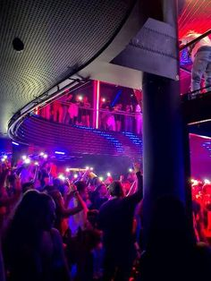
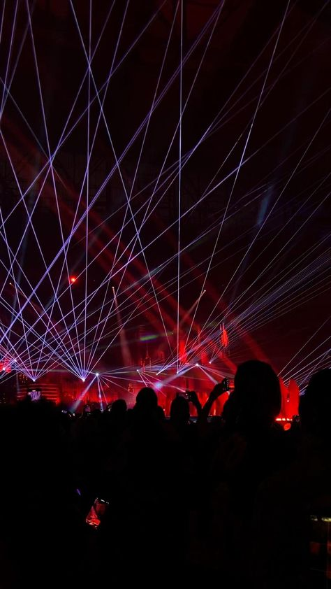
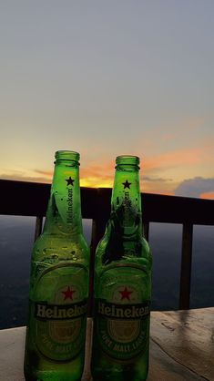
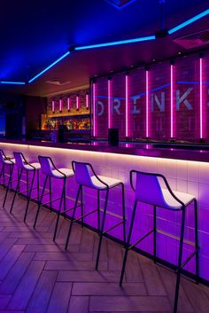
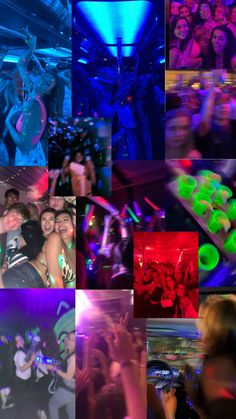

Paul le loup
paris
france
Avis aux geans ayant visitee ok pilipili
Le Pili-pili propose une carte très variée (trop peut être, cependant j'ai regretté l'absence de plats locaux et surtout de plats végétariens de qualité).
Les plats sont des standards de la gastronomie européenne avec également plusieurs pizzas de qualités. La soirée du dimanche est animée et le public,
nombreux et varié, peut danser sur de la musique commerciale très diversifiée ou bien regarder 1 ou 2 matchs en direct grâce aux nombreux écrans. Pour ma part,
j'ai apprécié la diffusion d'un match de rugby. Le service est un petit peu long (1h pour voir nos boissons servies)
mais nous n'étions pas pressés.